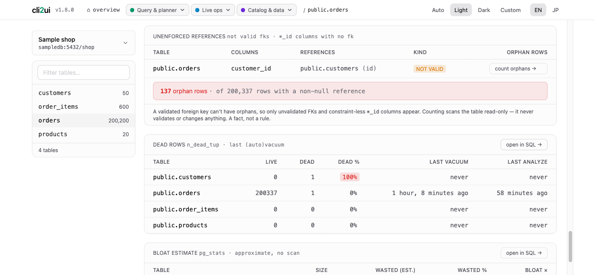
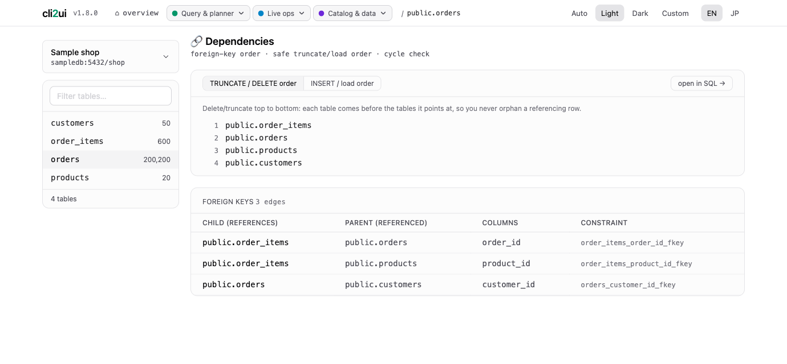
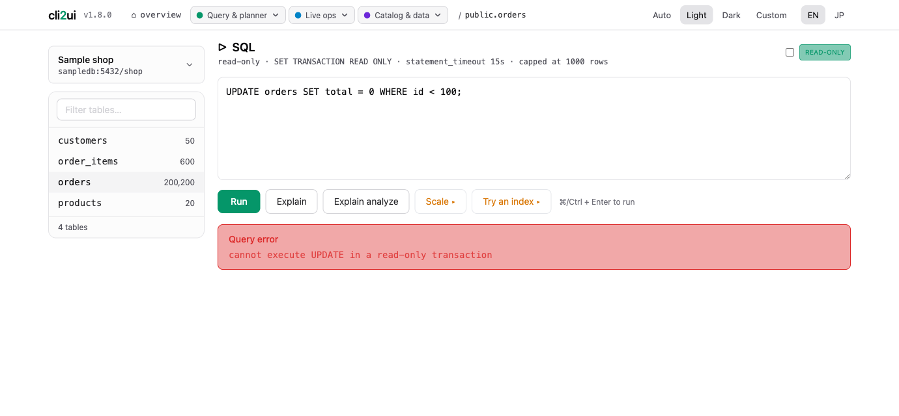
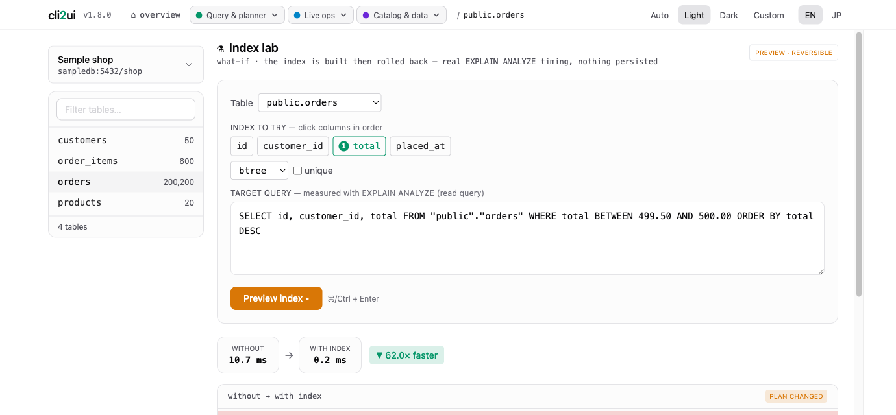
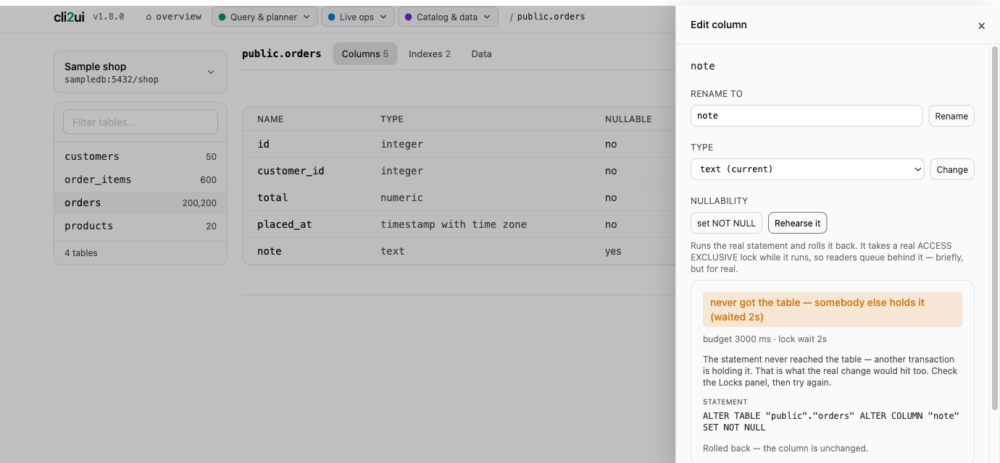
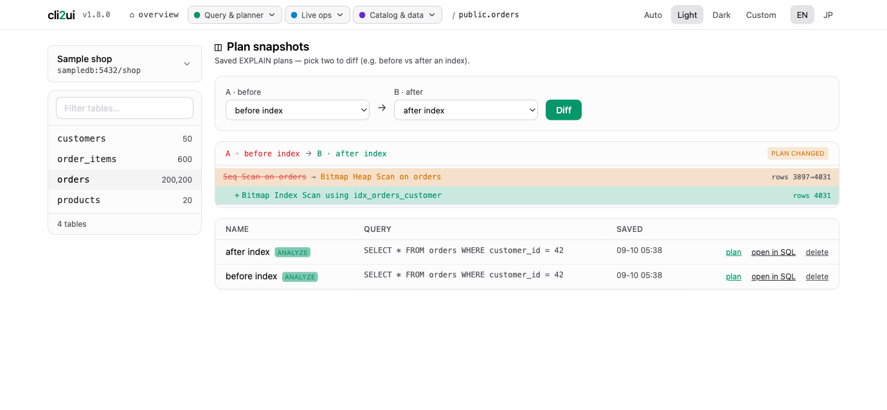
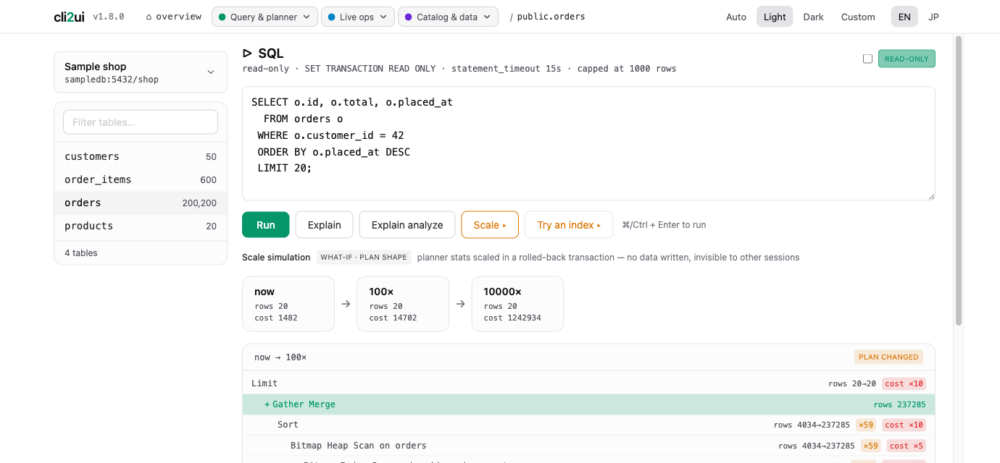

A web UI over the database CLI commands you keep half-remembering. No AI, no magic — just psql / mysql operations turned into clicks, running fully on your machine.
Built for app developers and solo developers — not DBAs. The pitch is “you're looking at your tables 3 minutes after deciding to”: no install marathon, no connection-wizard maze, no digging through nested trees — and no hunting for a demo database, either. Sample data ships in the box, pre-wired into the connection form.
See the result before you commit to it.
The dangerous part usually isn't the operation — it's not knowing until you've done it. Whatever can be answered first, is — and none of it leaves anything behind in your database.

Count the rows a NOT VALID foreign key never checked — without validating it, and without changing anything.

The foreign-key graph sorted into a safe TRUNCATE order and its reverse. Nothing is truncated.

The SQL runner opens a read-only transaction by default. No SQL is parsed to guess your intent — the server itself refuses the write, which is what makes trying things safe.
The command you'd have to look up — collapsed into one click.
psql -c "SELECT * FROM
pg_stat_activity"
pg_dump -t users mydb
mysql -e "KILL 4242"
A real DB client, running on your machine.
A real DB-client layout, one panel per job.
Works with PostgreSQL and MySQL (8.0+) — the same panels over either engine, behind the same read-only-by-default, local-only UI. The cards below use Postgres wording (pg_stat_activity, postgresql.conf); MySQL uses its own equivalents (SHOW PROCESSLIST, performance_schema, SET PERSIST). Where a feature has no MySQL equivalent (vacuum/bloat, the planner what-if lab, replication slots), the panel shows “not applicable” rather than a misleading empty card.
Try it inside a transaction you throw away. This is the heart of cli2ui.
Measure whether an index helps, before you create it.
Measure a hypothetical index before you create it — EXPLAIN ANALYZE before and after, the index built and rolled back in one transaction.

If it can't take the lock in two seconds, it gives up. Nobody queues behind it.
Every ALTER / DROP / TRUNCATE / rename runs under a short lock_timeout, so a change that cannot take its exclusive lock fails in two seconds — nothing changed — instead of waiting behind an open transaction while every later query queues behind it.

Save a plan, then diff it against the one you get after.
Save query plans and diff two of them — before and after an index — instead of copy-pasting plans into a scratch file.

At 100× the rows, where does the plan give way?
EXPLAIN the same query at 1× / 100× / 10000× the real row counts (a what-if pg_class edit, always rolled back) to see where the plan shape breaks as data grows.

One click for what would otherwise be one more query.
Running queries and connections. Stop one in a click.
pg_stat_activity gives the running queries and connections, with one-click cancel / kill.
The session everyone is waiting on sits at the top of the tree.
The wait-for chain as a tree: at the top, the head blocker(cancel / kill it to free everything beneath), with blocked sessions nested under it (pg_blocking_pids). Cycles are flagged. One-click cancel / kill on any session.
Unused, duplicate, bloated. Facts only — no advice.
Table sizes, unused indexes, unindexed foreign keys, redundant (duplicate / prefix) indexes, orphan rows (NOT VALID FKs and constraint-less *_id columns, counted read-only on demand), dead rows / vacuum, and a stats-only bloat estimate — read-only catalog facts, no advice.
A safe TRUNCATE order, derived from the foreign keys.
The foreign-key graph, topologically sorted into a safe TRUNCATE / load order — with FK cycles detected and named. Read-only; nothing is truncated.
What's installed, what the server could install, and what has an update.
What's installed in this database and what the server could install (\dx ＋ pg_available_extensions), with an update-available badge. Read-only; CREATE EXTENSION stays in the SQL runner.
Databases, schemas and roles — plus a postgresql.conf editor.
List databases, schemas and roles (\l \dn \du), plus create / rename / alter / drop (and DB clone via TEMPLATE ) behind confirm gates — and a postgresql.conf editor with reload-vs-restart badges.
Anything that writes runs inside a snapshot and a timeout.
Read-only by default. It writes only when you say so.
Read-only ad-hoc queries by default (READ ONLY + statement timeout + 1000-row cap), with an opt-in write mode that commits — guarded by a whole-database safety snapshot before each write, and by the same 2s lock_timeoutthe DDL buttons take (a checkbox, so you can wait when you mean to). Export a full query result — or a whole table — as CSV or JSON.
A snapshot is taken before anything destructive.
Automatic table snapshots before every destructive or structural change, plus restore of an uploaded dump — streamed to the client tool, not buffered in memory.
Readiness, WAL position, connected standbys, slots.
Readiness check (wal_level / max_wal_senders) + WAL position, connected standbys, and slot create / drop.
Every run logged with its result and timing. Re-run in a click.
Every SQL run logged with status, row count and timing — and one-click re-open to run it again.
The constraints are the product.
API-key management plus sending your schema to a third party is a non-starter for the people this is for. The tool does exactly the command you clicked — nothing it guessed.
The moment we'd hold your DB connection info, the liability and encryption story swamps the project. Local-only keeps it honest — no DB creds ever leave your network.
| Layer | Choice |
|---|---|
| Frontend | htmx + Alpine.js |
| Backend | Django |
| Management DB | SQLite |
| Infra | Docker |
The connection form is pre-filled to point at a bundled sample database — hitConnect and you're looking at its tables. Want realistic volume? An opt-in Airlines demo database (830k+ tickets,jsonb columns) is two commands away — see the README.
⚠️ Local-only by design — no authentication. Run it on localhost or a trusted network, never on the public internet.